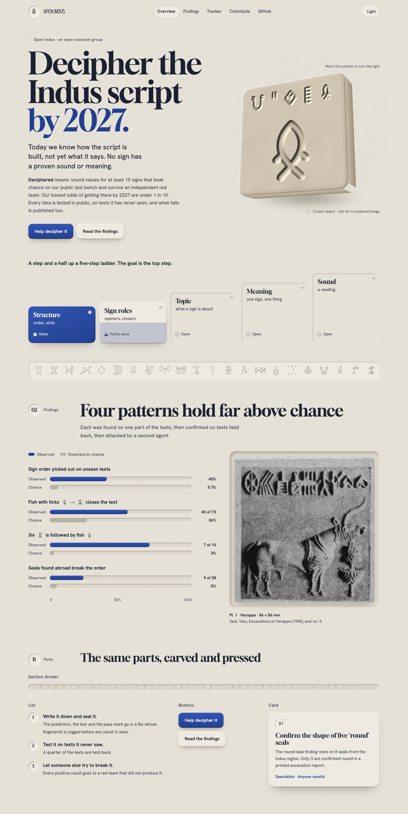
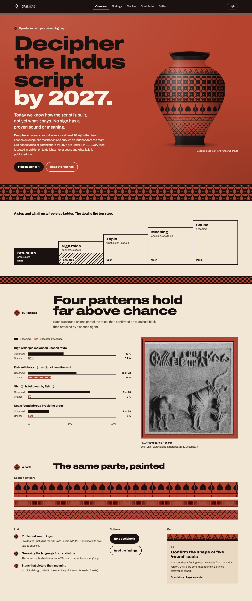
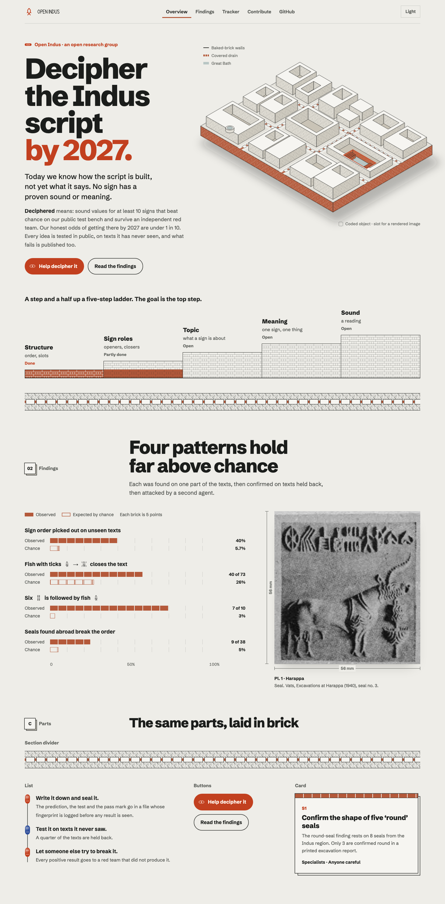
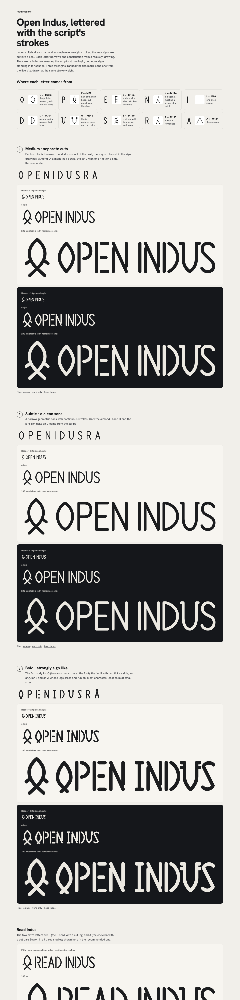

The same landing page, first two screens, in three different ideas of Indus Valley material culture. Each page has a light and a dark theme and a strip at the end showing a divider, a list, buttons and a card in that direction. The hero objects are drawn in code; each has a marked slot for a rendered image later.

A carved steatite seal you can relight with the pointer; everything else is cut into stone or pressed into clay, with lapis as the one colour.

The page as a painted jar: black on red slip, a turning vessel, and full-width friezes of intersecting circles, pipal leaves and fish scale.

An isometric Mohenjo-daro block with drains and the Great Bath; charts and the ladder are laid in brick to scale, with carnelian beads as marks.

OPEN INDUS in hand-drawn capitals built from the signs' strokes, in three strengths, with R and A for Read Indus.